← 返回阅读库 · 原论文目录
论文讲解阅读文档 · 机器人学 · v142
$\pi_0$: A Vision-Language-Action Flow Model for General Robot Control
视频时长 00:25:10；讲解文字 11,461 字符；提取讲解画面 148 张。按视频原顺序阅读，每段文字保留时间戳。
文字来自整段视频的自动语音转写，按自然停顿分段，并与 PPT / 论文页面 / 演示画面对齐。未将讲解压缩为摘要；术语、数字和口述公式请结合画面及原论文核对。 阅读稿已校正规范部分明确术语误识别；原始逐字稿和每处修改记录另行保留。
讲解画面为源视频截图（640×360），不是可编辑 PPT 文件。全片按每秒 2 帧扫描内容变化，逐步展开页保留；连续动画保留代表画面。清晰度受源视频限制。
下载完整资料包 · 含离线 HTML、PDF、Word、全部 PPT 画面和字幕。
原论文与材料
$\pi_0$: A Vision-Language-Action Flow Model for General Robot Control · 下载完整 PDF（17 页）
按时间阅读
00:00:00–00:00:05 · 画面 001
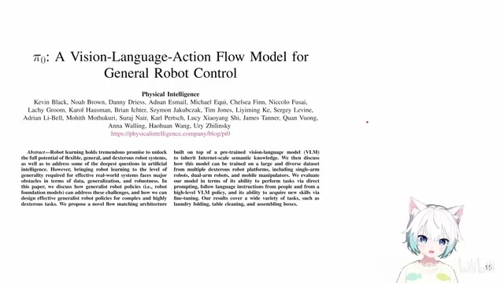
00:00:00–00:00:05 · 画面 001大家好，今天我们来快速数一篇论文，PyZeroVision Language Action Flow Model for General Robot Control。这一篇主要是两个亮点，第一就是 Flow Matching 作为 Action Generation，同时它是一个巨大的 VLA，它在很大量的数据上进行过预训练，号称自己是一个 General Robot Control，据说它可以相对方便的迁移到具体的各个环境当中。
00:00:05–00:00:06 · 画面 002
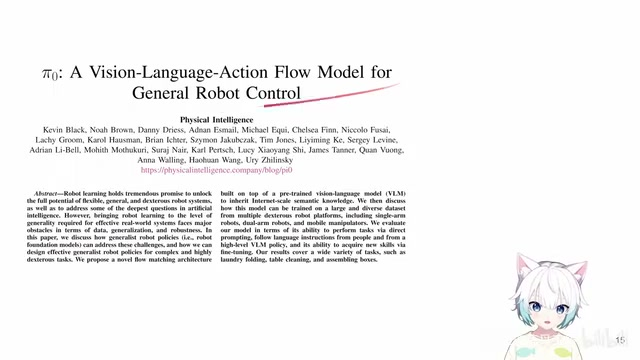
00:00:05–00:00:06 · 画面 00200:00:06–00:00:26 · 画面 003
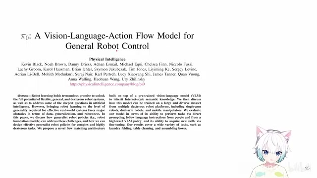
00:00:06–00:00:26 · 画面 003我们今天这个视频里面就重点的去看一下这个模型，它到底是什么样的一个架构，具体来说它的 flow matching 这个部分是怎么样运作的，同时包括在你真机实际部署这个模型的时候如何操作，来避免这个机械臂左右摇摆，在不同的路线中摇摆不定，同时去以相对平滑的移动，而不是说动一下停一下，思考一会儿，动一下停一下，思考一会儿这样。
00:00:26–00:01:08 · 画面 004
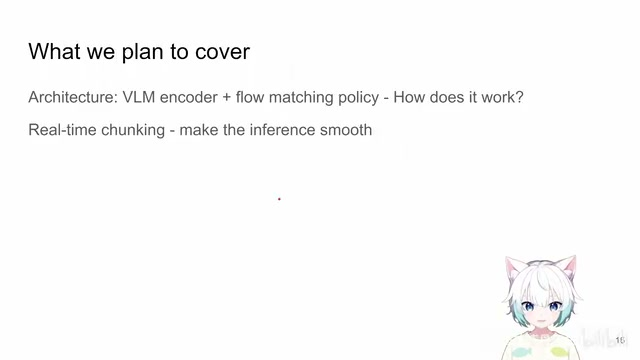
00:00:26–00:01:08 · 画面 004那么当然，在这个视频里面我们不会去涉及怎么样去配这个环境，怎么样去拿他的代码，我的这个训练的时候内存爆炸了怎么办。那这个为什么跑不通啊，能不能帮我看一下，以三连可有常英英英啊这样的问题呢，我们不在这个视频的讨论范围之内。好的，那么我们直接开始，首先呢，作为一个 vision language action model，它一定要能够处理 vision 能，一定要能够处理 language 啊，一定要能够生成 action。那么具体来看呢，在这篇文章的设计里面呢，它考虑的是一个单个时刻的图像文本和机器人状态的输入。
00:01:08–00:01:45 · 画面 005
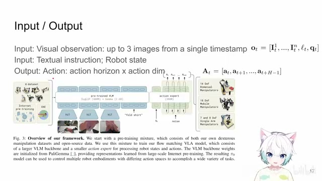
00:01:08–00:01:45 · 画面 005只处理单个时刻，然后对于每一个时刻，它至多处理三张图片，然后还有文本的指令，机器人的状态，比如说你的 nd factor 它的位置。旋转的角度或者你的机械臂里面。每一个关节的它的角度等等这些都可以是机械人的状态。对吧这些是作为模型的输入的。
00:01:45–00:01:47 · 画面 006
00:01:45–00:01:47 · 画面 00600:01:47–00:01:59 · 画面 007
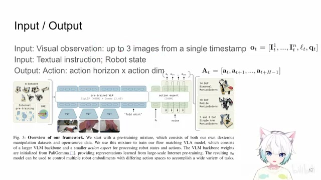
00:01:47–00:01:59 · 画面 007那么它的输出就是 action。同时它会一次会预测。未来很多步的 action比如说未来 50 步的 action这样的一个输出这是模型的输入输出的一个结构。
00:01:59–00:02:00 · 画面 008
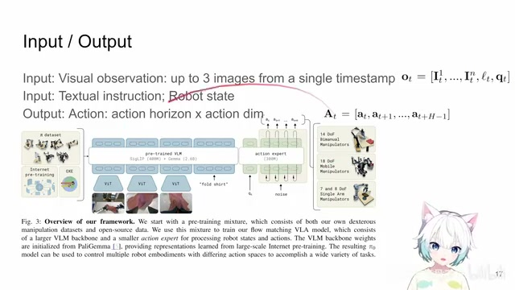
00:01:59–00:02:00 · 画面 00800:02:00–00:02:01 · 画面 009
00:02:00–00:02:01 · 画面 00900:02:01–00:02:20 · 画面 010
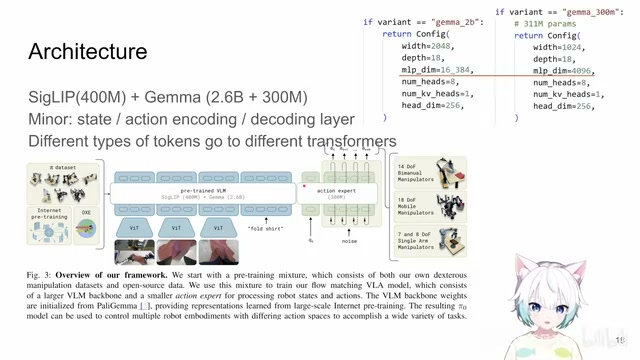
00:02:01–00:02:20 · 画面 010那么具体到模型本身。它的核心强调的是。我用一个 Vision Language Model去处理我的图片和文本的输入。这个 Vision Language Model可以是预训练的一个版本。对吧你用 General Knowledge去预训练出来一个 Vision Language Model。然后再把它改成方便我们机器人控制的。
这样一个 Encoder
00:02:20–00:02:21 · 画面 011
00:02:20–00:02:21 · 画面 011这是这个部分
00:02:21–00:02:50 · 画面 012
00:02:21–00:02:50 · 画面 012同时与它独立的是。额外的有一个相对体积较小的。一个 Language Model它我们叫它 Action Expert它用来处理像机器人状态。和 Noisy 的 Action Expert再有一个输入，为什么说这里是一个 noisy 的 action，因为我们是一个 flow matching model，它跟 diffusion model 一样是一个不断 denoise 的过程，你需要反复执行你的网络，所以在实际推理的过程中你有一个庞大的模型只执行一次，然后一个相对较小的模型会执行很多次，这个就是模型大概的架构，但是这两个模型初始化的时候我们更正一下视频第一个版本的错误，就是两个模型的深度和 attention 的结构是一样的。
00:02:50–00:02:52 · 画面 013
00:02:50–00:02:52 · 画面 01300:02:52–00:02:56 · 画面 014
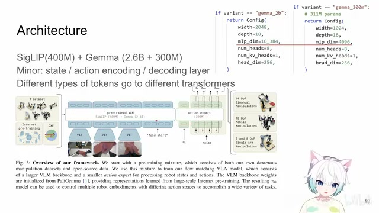
00:02:52–00:02:56 · 画面 01400:02:56–00:02:57 · 画面 015
00:02:56–00:02:57 · 画面 01500:02:57–00:03:03 · 画面 016
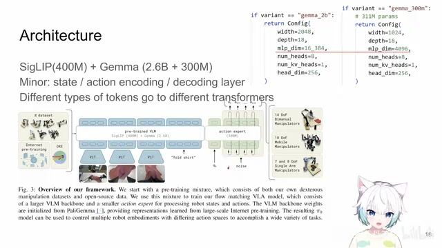
00:02:57–00:03:03 · 画面 01600:03:03–00:03:04 · 画面 017
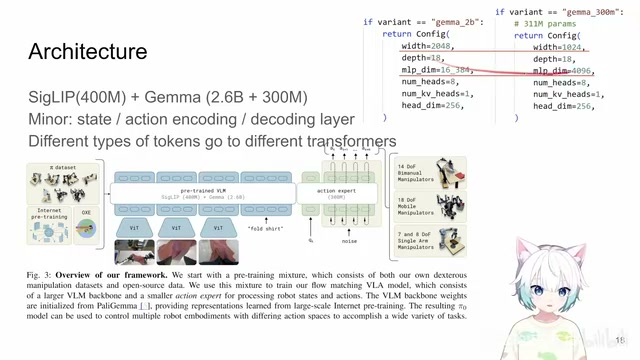
00:03:03–00:03:04 · 画面 01700:03:04–00:03:25 · 画面 018
00:03:04–00:03:25 · 画面 018但是模型的宽度是不一样的，Action Expert 它的明显的不论是 Token 的宽度还是 MLP 的宽度都比 Gemma 原来的 Language Model 的宽度要小。那为什么会这样呢啊，我们说 attention 的结构一样这样子呢，他好可以让通过 kv 的方式把我们的这个前面的信息给他传递到后面这个 action expert 里面，深度一样也是对吧，每一层对应的传递啊，那么这个宽度不一样呢，就是节省计算量嘛。那么下面呢，我们就继续来看，首先是在推理的过程中，我的 observation 进来，我的模型是怎么处理的，怎么样生成这个 action，那然后呢，我们再去看他训练的过程中我们使用什么样的 loss 啊。
00:03:25–00:03:26 · 画面 019
00:03:25–00:03:26 · 画面 01900:03:26–00:03:32 · 画面 020
00:03:26–00:03:32 · 画面 02000:03:32–00:03:34 · 画面 021
00:03:32–00:03:34 · 画面 02100:03:34–00:03:36 · 画面 022
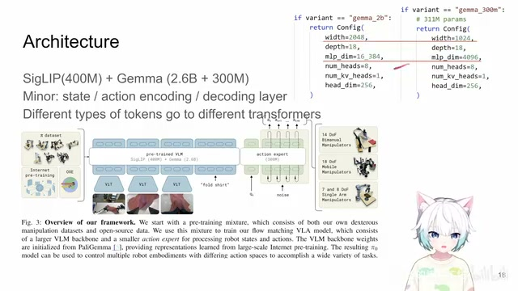
00:03:34–00:03:36 · 画面 02200:03:36–00:04:06 · 画面 023
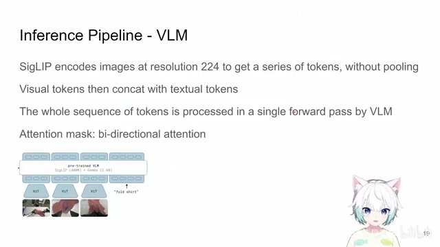
00:03:36–00:04:06 · 画面 023首先呢是推理，我们还是说了这个模型对吧，要能处理 language，要能处理 Vision，那 Vision 的部分呢，用了这个 SigLib 来去编码这个图像，那一开始你的所有的图像都是会被缩放到 224 这个尺寸，如果它不是一个方的图像你就用黑色把它填成方的，然后呢，你过了一个 Vision Transformer 这个 SigLib 之后，它生成一串的视觉 token，这 token 不需要做铺理，直接把它作为后面的这个 Gemma 的
00:04:06–00:04:07 · 画面 024
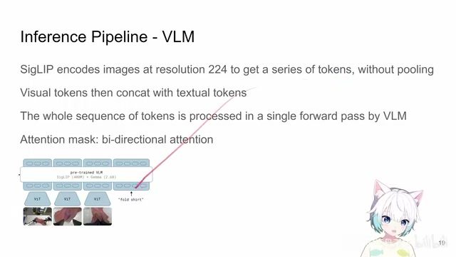
00:04:06–00:04:07 · 画面 02400:04:07–00:04:13 · 画面 025
00:04:07–00:04:13 · 画面 02500:04:13–00:04:14 · 画面 026
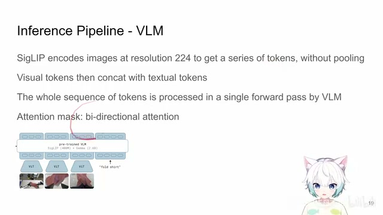
00:04:13–00:04:14 · 画面 026输入你最多可以支持三张图片，一般认为是这种双臂操作的场景，我有一个固定的摄像机从上向下看，然后呢，我左手右手各一个手腕上的相机来看，那当然，如果你是一个单臂的场景对吧，你可能就只有左手的这个图像，你就把这个图像就可以省略掉了，我两张图输入也可以，这是图像的输入的部分，那文本呢就跟其他的这个 language model 一样，你就把它经过 tokenizer 然后 embedding 对吧
00:04:14–00:04:33 · 画面 027
00:04:14–00:04:33 · 画面 02700:04:33–00:04:34 · 画面 028
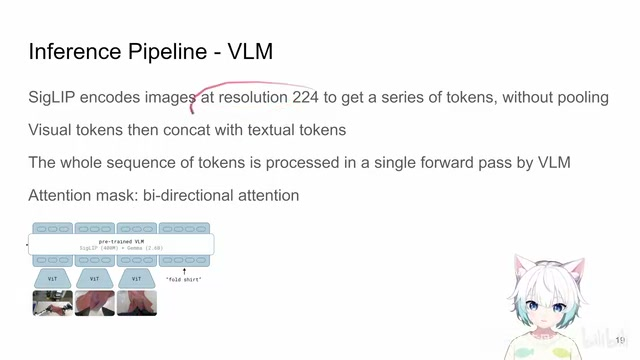
00:04:33–00:04:34 · 画面 02800:04:34–00:04:40 · 画面 029
00:04:34–00:04:40 · 画面 029把这个视觉 token 和文本 token 串起来
00:04:40–00:04:41 · 画面 030
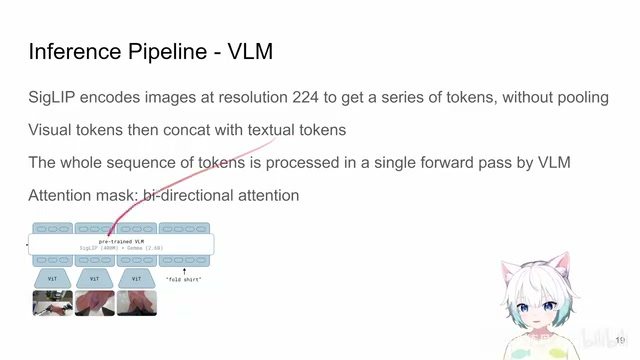
00:04:40–00:04:41 · 画面 03000:04:41–00:04:56 · 画面 031
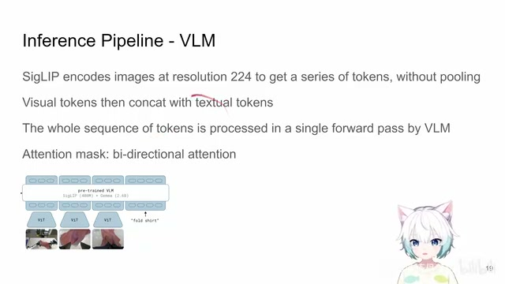
00:04:41–00:04:56 · 画面 031交给我们的这个 drama这个 language model 去处理就好了那么既然你不是一个生成任务你是一个编码任务你所有的 token 呢其实为了最好的效果大家都应该能够相互 attention所以呢这里的 attention 呢
00:04:56–00:04:57 · 画面 032
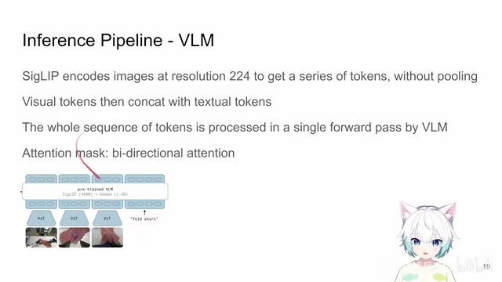
00:04:56–00:04:57 · 画面 032是一个双向的 attention
00:04:57–00:05:26 · 画面 033
00:04:57–00:05:26 · 画面 033大家随便 attention这是一开始编码的部分那么还是我们如何把这个编码好的东西交给我们下面的右边的这个网络让它能够生成好的 action 呢那这里呢用的就是 crossattention你在经过每一层 transformer 的时候你在经过每一层 attention 的时候你都会要算 kvq 嘛然后呢你的 key 和 value 是很宝贵的你后面在生成 action 的时候你这些 action token是同时可以 attent 到这些图像和文本的 key 和 value 的
00:05:26–00:05:27 · 画面 034
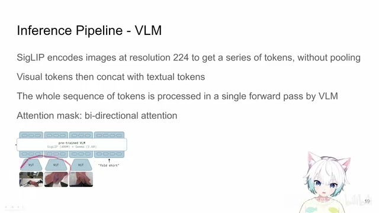
00:05:26–00:05:27 · 画面 03400:05:27–00:05:33 · 画面 035
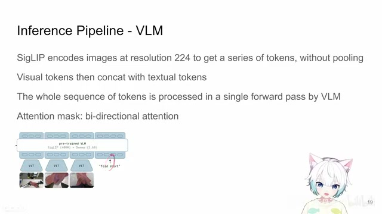
00:05:27–00:05:33 · 画面 035那具体怎么样做我们后面会详细的解那么在这里我们只知道
00:05:33–00:05:34 · 画面 036
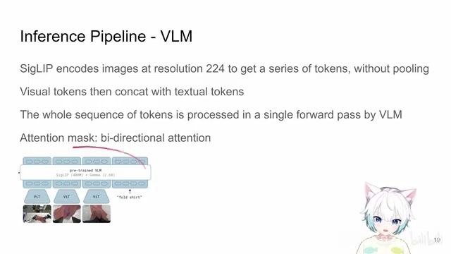
00:05:33–00:05:34 · 画面 036经过这样一个 encoding 之后
00:05:34–00:05:49 · 画面 037
00:05:34–00:05:49 · 画面 037transformer 里面的每一层每一个 attention layer它都会对这里面里面的所有的 token生成它的 key生成它的 value那这些 key 和 value会被我们下游的网络来使用那还是因为你已经知道所有的这些 token 了所以只需要过一次 forward pass
00:05:49–00:05:50 · 画面 038
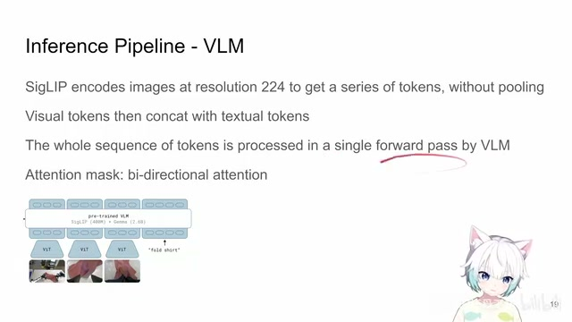
00:05:49–00:05:50 · 画面 038就可以了
00:05:50–00:05:53 · 画面 039
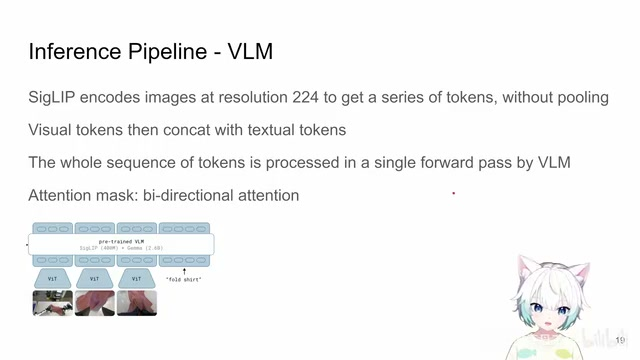
00:05:50–00:05:53 · 画面 039这是这一部分，那么然后的部分就是我们要怎么样通过 flow matching 来生成 action，这里我们非常简略的回顾一下 flow matching 它的原理，假如说我这个空间中既有我想要生成的数据，在这个空间里面可能是这些点，也有其他的像随机的噪声，我每一次从一个随机的噪声出发，我想要把我的噪声改善成我想要生成数据的样子
00:05:53–00:06:00 · 画面 040
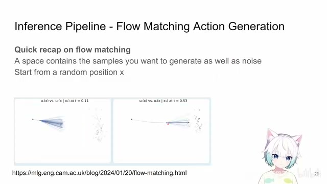
00:05:53–00:06:00 · 画面 04000:06:00–00:06:01 · 画面 041
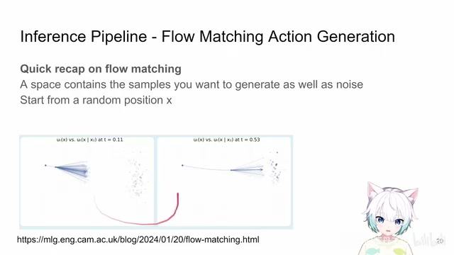
00:06:00–00:06:01 · 画面 04100:06:01–00:06:16 · 画面 042
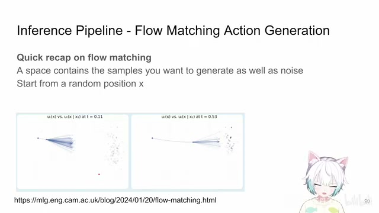
00:06:01–00:06:16 · 画面 042那怎么办呢，非常简单啊，假如说存在的这样一个 org，我只需要计算一下我当前的位置和我的这个目标它具体差多远对吧，就是我当前的位置和目标具体差多远啊，算一个差值，然后我沿着这个差值走这么一步，那不就到了吗对吧，所以呢，flow matching 的任务就是我要去尝试拟合，用一个神经网络去拟合这样一个 org，我知道我当前位置在哪
00:06:16–00:08:16 · 画面 043
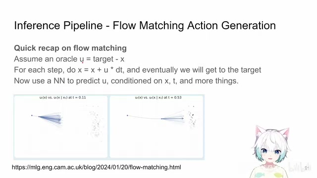
00:06:16–00:08:16 · 画面 043我只需要加上 Oracle 它就像导航一样告诉我你该往哪个方向去，然后你就往那个方向去就到了你想要的地方，但实际在工程中我不可能每次都能够完美的预测说我想要去到哪里，因此我们在实际的操作中更多是把这一路上的过程分成好多段，就像长安探测器奔月的时候你听到他说中间也有轨道的修正为什么对吧，就是我一开始我在 X 的时候我走了一个方向对吧，我走了一步然后走到这里来了，我想看一下我是不是应该更新一下方向，沿着一个新的方向走这样子更准确一点，那么有了新的方向之后你再往前走那么一小段再去看这个方向是不是有更新，这样一步一步的去走下去，最终达到我们想要的地方，所以你实际在操作的时候就是你
这个当前的位置你每次预测出一个方向来走这么一小步 JRT，假如说是一个很小的数值，这里我们把它理解成这是一个位置，这是一个速度，这是一个很小的一段时间这样一个概念，那么一个当前的位置加上这个速度乘以时间就到了一个新的位置，你就持续的这样做下去，最终能够达到你想到的地方，这是一个最朴实的 flow matching 的思想，你可以想象 Oracle 它提供的就是一个 flow对吧，你从当前位置到目的地的一个 flow，然后呢，你要尝试让你的 network 去 match 这样一个 flow，去学到你在不同的位置我应该朝哪个方向走，所以说呢，在这个学的过程中你肯定希望这个 network 它的输入包含你当前的这个位置，你得先找准自己的位置然后才能说去哪对不对，同时呢，刚好我们也说了在工程上呢我们要考虑一次走一小步
00:08:16–00:09:05 · 画面 044
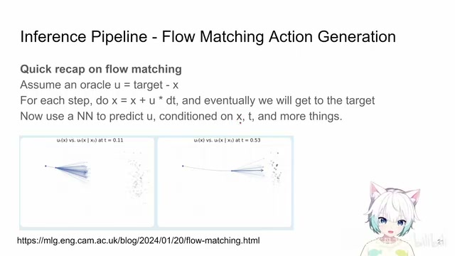
00:08:16–00:09:05 · 画面 044我之前已经走了多少步那这个呢也常被用来作为我这个网络的条件等你在刚开始出发了之后跟你要最后这个旅行快结束的时候你的走找方向的策略是不一样的啊这些呢都是要考虑到了那么这个呢就是一个最基础的无条件的一个 flow matching 的一个概念那为什么叫它无条件的对吧因为你只是说了你现在在哪让他大概给你一个方向你没有告诉他你具体想去哪你如果要真要考虑到你自己想去哪或者说是你想要一个什么样的方向去所以你在网络生存的过程中可能还会加入更多的条件这个就是一个非常不严谨的 flow matching 的原理那么我们回到我们具体的模型的设计
00:09:05–00:09:10 · 画面 045
00:09:05–00:09:10 · 画面 045我们之前说了我们希望我一个单独的 action expert 一个小一点的模型他去处理 robo state 他去处理我们的 noisy action 通过 flow matching 不断的去 denoise 这个过程就是不断的从一个 noise 出发告诉我我该从哪个方向走哪个方向走走很多步一直走到我们想要的 action 的位置
00:09:10–00:09:11 · 画面 046
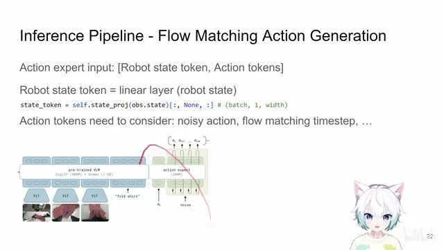
00:09:10–00:09:11 · 画面 04600:09:11–00:09:38 · 画面 047
00:09:11–00:09:38 · 画面 047具体来看它怎么处理的对于 RoboState 好说不管你是什么样尺寸的 RoboState 进来一个 linear layer 给它投影变成一个 token 就好了这个是相对容易的
00:09:38–00:09:39 · 画面 048
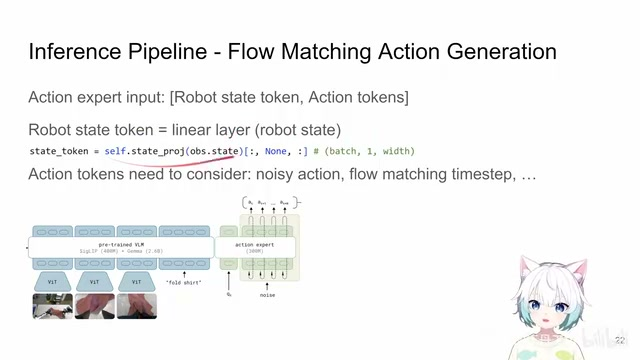
00:09:38–00:09:39 · 画面 04800:09:39–00:09:55 · 画面 049
00:09:39–00:09:55 · 画面 049但是呢我们之前说了我这个网络是为了给一个 flow 的方向的我是希望这个网络要知道我当前在哪啊在哪怎么体现就是 noisy 的这个 action 作为输入我希望我这个网络知道我走了多少步啊这个 flow matching 的 timestamp 它要作为输入同时呢我还希望考虑到更多的条件就是比如说我前面 encode 啊我的图像的输入
00:09:55–00:09:56 · 画面 050
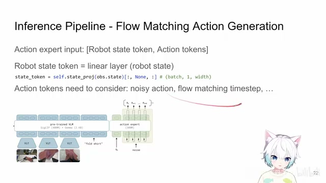
00:09:55–00:09:56 · 画面 05000:09:56–00:09:58 · 画面 051
00:09:56–00:09:58 · 画面 05100:09:58–00:10:00 · 画面 052
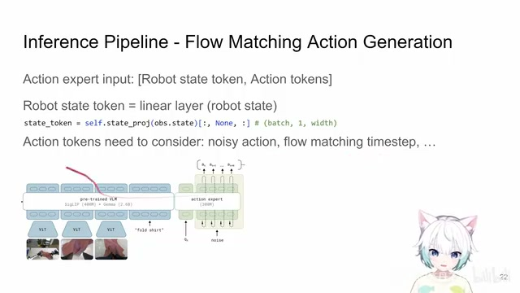
00:09:58–00:10:00 · 画面 05200:10:00–00:10:03 · 画面 053
00:10:00–00:10:03 · 画面 053我的用户的指令我还要考虑这些啊我希望把这些东西作为我额外的条件输入到这个网络里面那具体怎么输入的呢我们来看他的这个 action token 的这个设计就是你看到我一开始有 noisy action 啊他经过一个 linear layer 投影一下同时呢有这个 flow matching 的 timestamp 啊用这个 syncosyn 编码他生成的时候就是一个尺寸跟他一样的这样的一个 embedding 那这里每一个 embedding 其实都是
00:10:03–00:10:06 · 画面 054
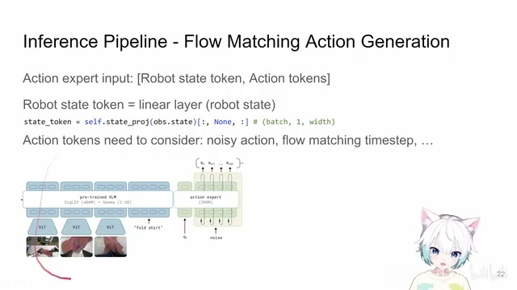
00:10:03–00:10:06 · 画面 05400:10:06–00:10:10 · 画面 055
00:10:06–00:10:10 · 画面 05500:10:10–00:10:22 · 画面 056
00:10:10–00:10:22 · 画面 05600:10:22–00:10:24 · 画面 057
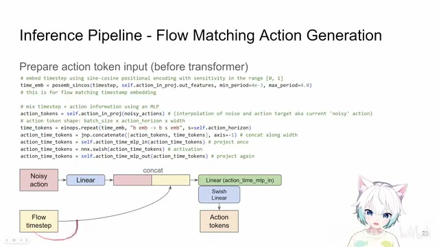
00:10:22–00:10:24 · 画面 05700:10:24–00:11:04 · 画面 058
00:10:24–00:11:04 · 画面 058你的后面 language model 中的一个 embedding 的一个长度或者叫 token 的宽度对吧这里你看它选择的不是一般的相加的方式而是直接把两个这样的串接起来这是它串接的过程然后经过一个 linear layer 这个 linear layer 它的输入是两倍的 token 的宽度输出是一倍的标准的 token 的宽度然后经过激活函数再过了一层这个输出的那最终得到了一个 vector 它肯定也是一个标准 token 宽度那么这个 token 呢就是之前我们这里和 robot state token 一起作为 action expert 这个网络它的输入的这个序列的构成你可以看到它通过这样一个结构包括了我当前的 noisy action 和这个 flow matching 的 timestep 这样一个过程那么有了这样一个序列之后我们就可以把
00:11:04–00:11:06 · 画面 059
00:11:04–00:11:06 · 画面 05900:11:06–00:11:07 · 画面 060
00:11:06–00:11:07 · 画面 06000:11:07–00:11:12 · 画面 061
00:11:07–00:11:12 · 画面 06100:11:12–00:11:17 · 画面 062
00:11:12–00:11:17 · 画面 06200:11:17–00:11:19 · 画面 063
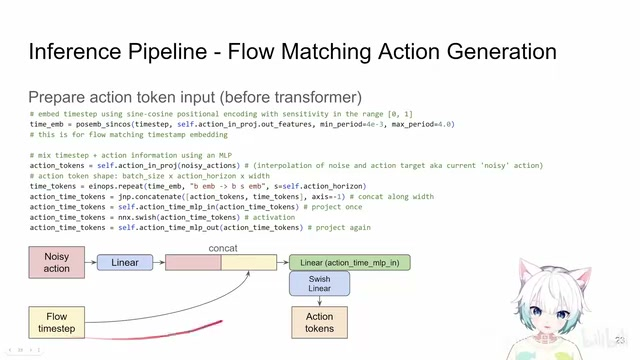
00:11:17–00:11:19 · 画面 06300:11:19–00:11:20 · 画面 064
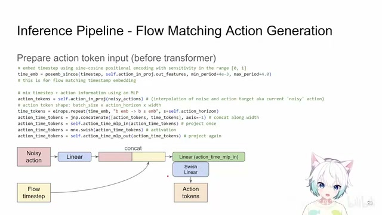
00:11:19–00:11:20 · 画面 06400:11:20–00:11:35 · 画面 065
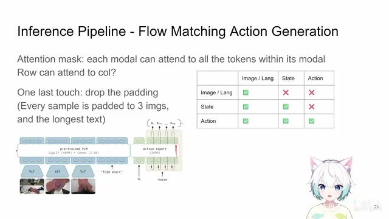
00:11:20–00:11:35 · 画面 065这个序列送到 transformer 里面对吧然后去 denoise 那具体怎么样 denoise 呢那我们重点关注一下这个 action expert 里面他的 attention 的设计这里呢首先我们要 follow polygema 他的一个观察就是相同模态之间的这个 token 他们是可以始终是可以相互 attend 比如说你一张图还有很多个 token 啊他这些 token 之间他们是可以相互 attend 一个 language
00:11:35–00:11:36 · 画面 066
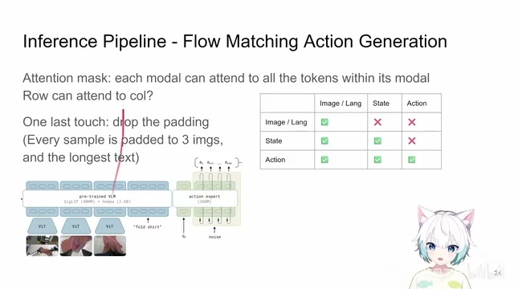
00:11:35–00:11:36 · 画面 06600:11:36–00:12:11 · 画面 067
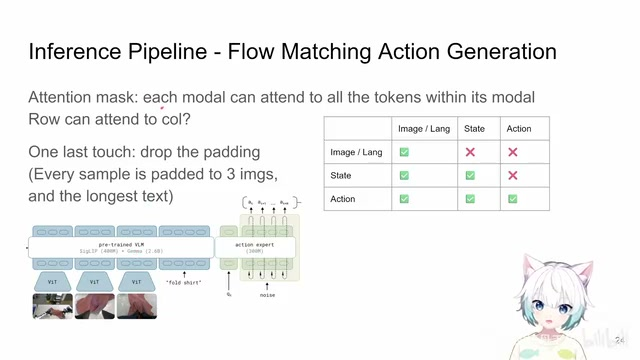
00:11:36–00:12:11 · 画面 067一句话里面有很多 token 他们是可以相互 attent 的然后包括你的 action 你这里 action 一个 token 就代表了一个 time step 就是你机器人的这个 time step 当前时刻的这个 action 和未来一个时刻两个时刻的这个 action 他们之间都是可以相互 attention 的因为他们是都是在一个模态里面的这个是 parallel schema 的观察而对于不同模态之间因为我们知道这个 sequence 它的顺序一开始是视觉 token 文本 token 机械人状态加 action 这样一个序列那么对于不同模态之间你就要保持这个 causal attention 的关系就是你
00:12:11–00:12:12 · 画面 068
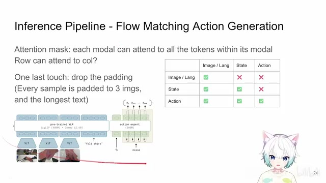
00:12:11–00:12:12 · 画面 06800:12:12–00:12:33 · 画面 069
00:12:12–00:12:33 · 画面 069不能够 attend 到后面的东西，你的 language 和 image 相互自己 attend 就得了，你看不到后面的 state 和 action，你的 state 只能看到前面的 language 和 image，那么当然差距题外化对吧？你的一个 batch 里面每个样本它的尺寸可能都不一样，这个时候呢你就通过 padding 来解决，比如说图像你就全部都拍得到三张图，然后文本呢你就拍得到最长文本，那当然这些用来 padding 的 token 呢
00:12:33–00:12:34 · 画面 070
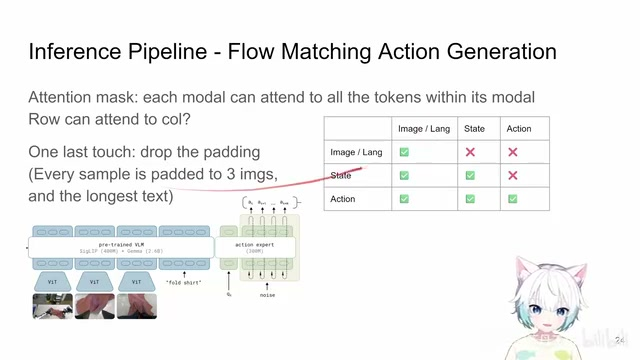
00:12:33–00:12:34 · 画面 07000:12:34–00:12:49 · 画面 071
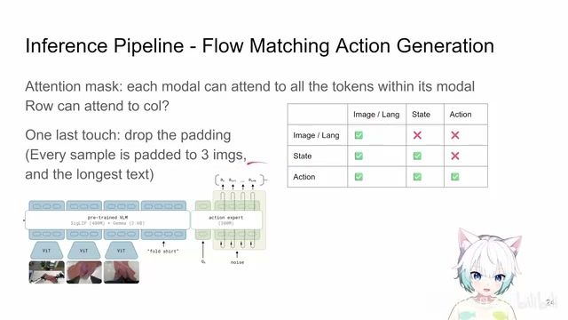
00:12:34–00:12:49 · 画面 071你是不要跟他有任何交互的啊，这是他的 attention mask 好，然后我们来看这个 attention mask 的具体实现，首先呢我有一个 input mask 来确定说这个位置的这个模态这一串 token 他是真实存在的 token 还是说他是一个 padding 啊，我们这样就不 attent 他了啊，这个是好理解的，然后呢有这个 mask ar 你看这里他的设计是说啊，我所有的 1
00:12:49–00:12:51 · 画面 072
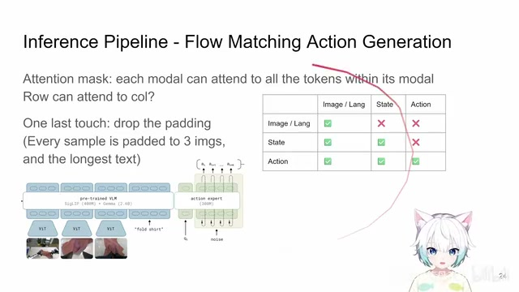
00:12:49–00:12:51 · 画面 07200:12:51–00:13:05 · 画面 073
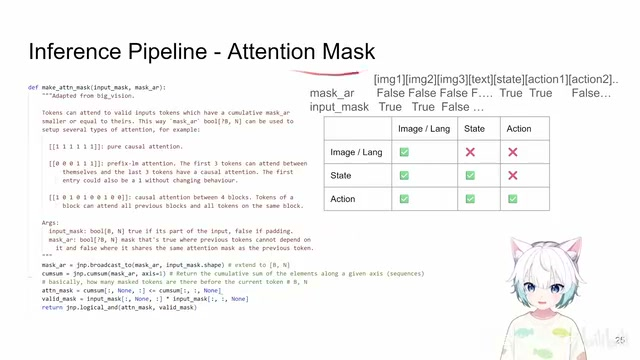
00:12:51–00:13:05 · 画面 07300:13:05–00:13:27 · 画面 074
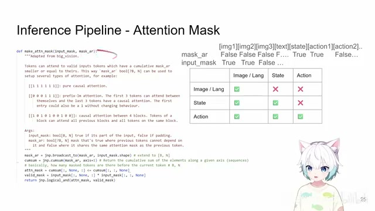
00:13:05–00:13:27 · 画面 074和后面的 0 之间它们是可以相互 attent 的啊，但是呢跨了这一个 block 之后啊就只能做 causalattention，就是如果是 1 的话它只能跟前面做 causalattention，而如果是 0 的话它可以跟前面做这个双向的 attention，那具体到我们这边比如说我们知道一个序列里面它是三张图片一个文本加上这个 state 加上很多 action，你的这个 mask2 它的这个具体的值就是前面这四个
00:13:27–00:13:39 · 画面 075
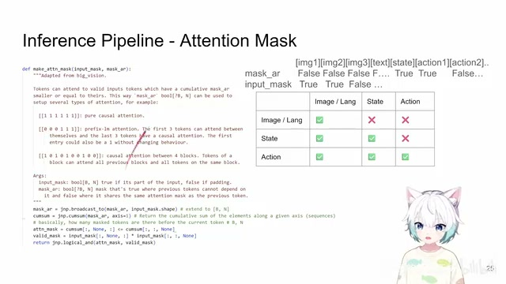
00:13:27–00:13:39 · 画面 07500:13:39–00:13:41 · 画面 076
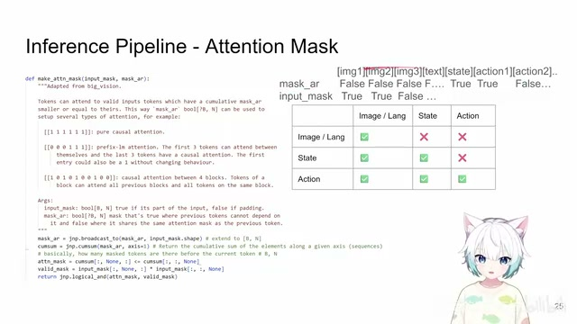
00:13:39–00:13:41 · 画面 076都是 0 对吧，这是一个大的 block 他们可以相互的 attention，然后呢 state 这里是一个 1 啊，他可以跟前面做 causalattention，跟后面 mod 然后这个 action 啊包括后面所有的 action token 也是一个巨大的 block 他们之间相互可以做 attention 啊，然后呢跟前面做 causalattention
00:13:41–00:13:53 · 画面 077
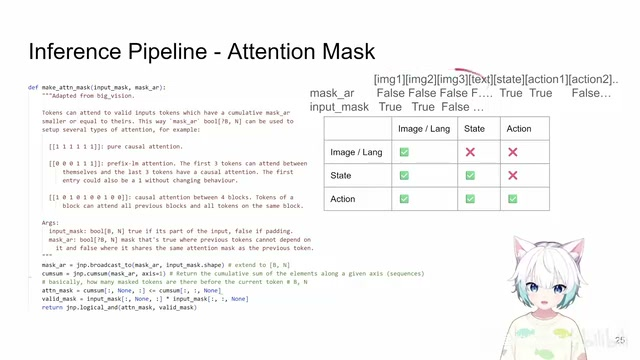
00:13:41–00:13:53 · 画面 07700:13:53–00:13:54 · 画面 078
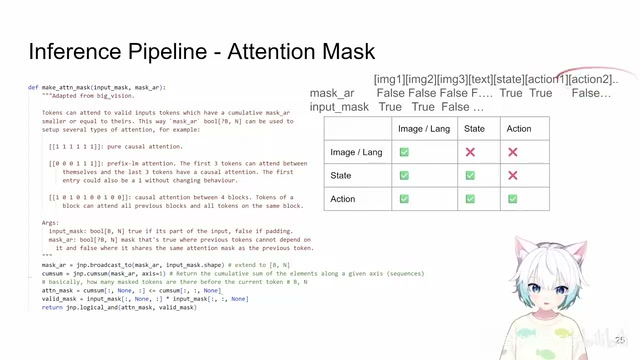
00:13:53–00:13:54 · 画面 07800:13:54–00:14:01 · 画面 079
00:13:54–00:14:01 · 画面 079这是它的实现，那么 input mask 对吧，假如说你这个第三张图片它是一个空的它是 padding，你没有第三张图片那这个时候呢你这里就把它打成 false，整个这个模态就不做 tension 了，这是它的具体的实现就你看非常简洁就把它写出来了，然后呢我们来看到它推理的部分就是我们首先既然是 flow matching 嘛，我肯定要一个初始化一个 noise，这个 noise 从 normal distribution 里面出来的它的形状呢就跟我们想要生成的 horizon 乘以这个
00:14:01–00:14:02 · 画面 080
00:14:01–00:14:02 · 画面 08000:14:02–00:14:12 · 画面 081
00:14:02–00:14:12 · 画面 08100:14:12–00:14:13 · 画面 082
00:14:12–00:14:13 · 画面 08200:14:13–00:14:16 · 画面 083
00:14:13–00:14:16 · 画面 08300:14:16–00:14:23 · 画面 084
00:14:16–00:14:23 · 画面 08400:14:23–00:14:24 · 画面 085
00:14:23–00:14:24 · 画面 08500:14:24–00:14:31 · 画面 086
00:14:24–00:14:31 · 画面 086Dimension 啊一样的这个大小啊
00:14:31–00:14:32 · 画面 087
00:14:31–00:14:32 · 画面 087这是我的 noise
00:14:32–00:14:35 · 画面 088
00:14:32–00:14:35 · 画面 088然后呢这个先生成一边
00:14:35–00:14:36 · 画面 089
00:14:35–00:14:36 · 画面 089先先放在这边不管
00:14:36–00:14:37 · 画面 090
00:14:36–00:14:37 · 画面 090我先把我的图像和文本给他引扣的好
00:14:37–00:14:43 · 画面 091
00:14:37–00:14:43 · 画面 091对吧这里 observation 进去之后他出来的这个 prefix token就是这个所有的 image token 加文本 token
00:14:43–00:14:45 · 画面 092
00:14:43–00:14:45 · 画面 09200:14:45–00:15:02 · 画面 093
00:14:45–00:15:02 · 画面 093啊然后呢算好他们之间的 attention mask其实就是一个全的双向的 tension除非你说你这好像是一个 padding他就没有这个 tension那这个 position 就是后面用来算transformer 里面的 position encoding这个 position 对吧它会跳过这些 padding token然后呢
00:15:02–00:15:03 · 画面 094
00:15:02–00:15:03 · 画面 094你把这一个 prefix token
00:15:03–00:15:04 · 画面 095
00:15:03–00:15:04 · 画面 095就这一串
00:15:04–00:15:05 · 画面 096
00:15:04–00:15:05 · 画面 096送到我们的这个大的
00:15:05–00:15:11 · 画面 097
00:15:05–00:15:11 · 画面 097VNM 里面还是只跑一个 forward pass我们希望留的是每一个 token它在 transformer 里面的
00:15:11–00:15:12 · 画面 098
00:15:11–00:15:12 · 画面 09800:15:12–00:15:24 · 画面 099
00:15:12–00:15:24 · 画面 099每一层的 key 和 value那做出来这个 kvcache它是一个 key 和 v 的一个 tuple然后呢每一个 key 和 v 的形状都是transformer 的层数 batch size 然后 sequence 的这个整个的长度然后呢你有多少个 head 还有 head dimension 也就是也就是你的 kick v 它的 value 的长度嘛，那么然后重点就是 flow mention 的部分我们希望用后面的那个 action expert 网络要把它跑很多次来逐渐的 denoise 我们这个过程，那怎么操作呢其实就是一个 valve loop，那这个函数具体的意义呢写在这里了对吧，我们只需要注意它的这个控制循环的
00:15:24–00:15:25 · 画面 100
00:15:24–00:15:25 · 画面 10000:15:25–00:15:30 · 画面 101
00:15:25–00:15:30 · 画面 10100:15:30–00:15:31 · 画面 102
00:15:30–00:15:31 · 画面 10200:15:31–00:15:32 · 画面 103
00:15:31–00:15:32 · 画面 10300:15:32–00:15:36 · 画面 104
00:15:32–00:15:36 · 画面 10400:15:36–00:15:38 · 画面 105
00:15:36–00:15:38 · 画面 10500:15:38–00:16:20 · 画面 106
00:15:38–00:16:20 · 画面 106开始的是这个 times 它就是我们的 flow matching 的 time step 我看它是不是到我们认为的终点了这是它循环的条件，那如果没到我们就执行这个 step 你看 step 它一开始拿了这个 noise 也就是我们刚刚一开始初始化的这个 noisy action 然后这是我们一开始的这个time step 啊，注意这个 time step 实现跟他这个论文里面写的是反过来的啊。这个他在注释里面也说了啊。我们看到啊，我们准备这个 suffix token，就是我们之前说的 robo state 加 action token。那 action token 怎么做，就是他是经过这样一串的东西啊，把 noise action 还有这个 flow matching 的 time step 都考虑进来，变成这个 action token。那你回来，你现在有这个 robo state tokenaction token，然后你就交给 transformer 去 denoise。你希望在 denoise 的过程中
00:16:20–00:16:25 · 画面 107
00:16:20–00:16:25 · 画面 10700:16:25–00:16:26 · 画面 108
00:16:25–00:16:26 · 画面 10800:16:26–00:16:27 · 画面 109
00:16:26–00:16:27 · 画面 10900:16:27–00:17:11 · 画面 110
00:16:27–00:17:11 · 画面 110特别是在过 attention module 的时候，它那么能够注意到之前的 image 和 language instruction。所以这个时候你就把之前第一步产生的 kvcache 带进来。你看到我们有 suffix token 的数量的 token 需要做 attention，而可供选择的 kv 包括你之前的 prefix token，就是 image 和 language token，还有他们 suffix 这些 token 他们自己构成这样一个大的 attention map。那当然你这个 position 在也是整个一个序列，他不仅要考虑之前的 image languagetoken，还要考虑后面的 robot state action token 对吧。这个
00:17:11–00:17:12 · 画面 111
00:17:11–00:17:12 · 画面 11100:17:12–00:18:10 · 画面 112
00:17:12–00:18:10 · 画面 112都弄好，所有的你的这些 attention mask，你的 position 弄好，送到 language model 里面。你看注意看他这里实现，前面第一个这个地方给的是 none，说明我不再去计算我第一个 module，说明我不再激活第一个大的 vish language model，我只用第二个小的网络去处理这个 suffix token。而在这个处理的过程中呢，我有这个 kvcache，这个 kvcache 包含了我之前第一个网络处理的结果那把这些东西弄起来，我们就重点关注这个 suffix token。我们之前说了，它第一个 token 是这个 robot stake token，我们不关注它，因为我实际不会用它去做任何的 robot control。然后后面是 horizon 个 action token，这个是我们需要关注的。这里网络有额外的一层 linear layer 来给它做 decoding，把我的
宽度是 language 的 embedding 的宽度来给它投影到真正的 action 的 dimension。最后预测出来的我们称它为 vt，也就是我们尝试去预测的 flow matching 的速度。有了它之后，我终于去可以更新我当前的位置。这是我当前的位置，一开始的输入对吧。我当前的位置，然后根据我的 delta t 走了一小段时间，然后
00:18:10–00:18:14 · 画面 113
00:18:10–00:18:14 · 画面 11300:18:14–00:18:28 · 画面 114
00:18:14–00:18:28 · 画面 11400:18:28–00:18:29 · 画面 115
00:18:28–00:18:29 · 画面 11500:18:29–00:18:51 · 画面 116
00:18:29–00:18:51 · 画面 116根据我的这个速度想不到时间乘以速度啊来去修正一下我新的位置，这就是我下一步循环开始新的位置。同时呢，我因为走了一个 delta t 的时间对吧，我这个 time 也要跟着更新。那么下一个循环你在这里写出来也是我新的位置是这个，我新的时间是这个，然后呢你再去过这样的一个循环。应该是那实际的操作中呢，这里的这个 delta t 是 0.1，然后他们呢是从 1 减到 0 啊，就是说你做 10 次这样的这个 flow matching
00:18:51–00:18:53 · 画面 117
00:18:51–00:18:53 · 画面 11700:18:53–00:19:10 · 画面 118
00:18:53–00:19:10 · 画面 118的这个步骤。那么这是他推理的部分。那么下面我们再来看，我们在训练过程中要怎么样计算这个网络的 loss。那其实它是一个相对更简单的过程，就像你训练 diffuser model 一样，你把一个 noise 的输入加进去，然后期望他去预测一个 noise 就好了。那同样这里也是你在训练的时候，你随机踩一个你的这个时间就是你在
00:19:10–00:20:06 · 画面 119
00:19:10–00:20:06 · 画面 119flow matching 里面具体走到哪个位置然后呢你去构造你当前这个位置的 noisy 的 sample 根据你的 clean image clean action 来去构造你这个 noisy 的 sample 你根据你当前的这个位置和你的光数字来去构建你的 target direction 就是你的 oracle 它的理想的速度应该是什么样的然后呢还是你就所有的模型只过一个 forward pass 你希望你最终预测到的这个速度跟你这个之前定的目标是一样的就好了对吧你看对应到上面这个式子这是你的网络的预测这是你当前 noisy 的 action 通过线性差值的这个方法构建出来的然后这个是你 ground truth 你希望你的预测结果接近它你右边的 action expert 好说对吧就是一个 transformer 直接通过最后的末端这些所有的 token 的 loss 就直接把这个 t 度传递下来了你左边这个 VLM 是通过你这个 crossattention 里面通过 qvcache 把这个 t 度
00:20:06–00:20:07 · 画面 120
00:20:06–00:20:07 · 画面 12000:20:07–00:20:11 · 画面 121
00:20:07–00:20:11 · 画面 12100:20:11–00:20:13 · 画面 122
00:20:11–00:20:13 · 画面 12200:20:13–00:20:27 · 画面 123
00:20:13–00:20:27 · 画面 123就传回来了这是他训练的过程那么此外额外议题呢就是他构建这个 time 的时候他并不是均匀的采样的他是用一个 beta 分布来采样这个你要注意一下同时还是这个文章里面的这个 t 和他实际代码里面的 t0 和 1 是反过来的好了那么到现在我们就已经把这个模型的推理还有 loss 的构成都
00:20:27–00:20:28 · 画面 124
00:20:27–00:20:28 · 画面 12400:20:28–00:20:41 · 画面 125
00:20:28–00:20:41 · 画面 12500:20:41–00:20:42 · 画面 126
00:20:41–00:20:42 · 画面 12600:20:42–00:21:18 · 画面 127
00:20:42–00:21:18 · 画面 127介绍完了你拿它和 Diffusion Policy 做类比本质的区别就是把 Diffusion Policy 换成了一个 Flow Matching 同时 Encoder 部分变成了前面的大的 Vision Language Model 做 Encoder 然后施加 Condition 的方式就是相同层数的网络的 KV Cache 做 Cross Attention 施加了影响大的框架跟之前的方法是一脉相承的只不过它的各个部件在不断的去迭代然后还有一些小的细节比如说像 image augmentation 如果不是手腕上的相机它只针对第一张图静态的相机它做的 random probe 还有 rotation 这个东西
00:21:18–00:21:39 · 画面 128
00:21:18–00:21:39 · 画面 128那么还有所有的图片都做的 color jittery 这些东西这是图像的 argumentation 这一块小的细节那么之前我们还说他既然是个 generalist 的 robot policy 他应该针对不同的 embodyment 不同的机器人的结构都有处理这里你看到他 action space 的定义如果你是只有一只手
00:21:39–00:21:40 · 画面 129
00:21:39–00:21:40 · 画面 12900:21:40–00:21:41 · 画面 130
00:21:40–00:21:41 · 画面 13000:21:41–00:21:48 · 画面 131
00:21:41–00:21:48 · 画面 13100:21:48–00:21:50 · 画面 132
00:21:48–00:21:50 · 画面 13200:21:50–00:21:58 · 画面 133
00:21:50–00:21:58 · 画面 133或者是只有两只手的情况下你就把后面的这些没有值的地方就给它作为拍顶就好了那么其他的包括它的训练的数据你看不同的机器人不同的结构训练数据等等如果你感兴趣的话真正去训练这样一个模型的话你大概也不需要看这个视频所以我大概也就不需要讲那么后面还有很多包括像复杂的指令需要很高阶的语义的理解比如说 Q 宝 Q 宝我渴了 Q 宝 Q 宝外面太亮了
00:21:58–00:22:37 · 画面 134
00:21:58–00:22:37 · 画面 134把窗帘拿一下啊这种样的指令啊对吧你可以借助微小男人 model 和 languagemodel 的力量把这一个复杂的需要与以理解的任务给他拆分成很多个简单的小的 instruction 然后呢再去驱动我们这个派这个模型所以这是他们对自己模型的能力的一个期望好那么谈完这些呢最后我们来说一说这个 real time trunking 也就是怎么样子我们在真机部署的时候让他的这个机械臂的运动更流畅
00:22:37–00:22:38 · 画面 135
00:22:37–00:22:38 · 画面 13500:22:38–00:22:42 · 画面 136
00:22:38–00:22:42 · 画面 13600:22:42–00:22:52 · 画面 137
00:22:42–00:22:52 · 画面 137然后同时呢不要出现这种左右摆来摆去的情况对吧这个图就说的很明显了
00:22:52–00:22:53 · 画面 138
00:22:52–00:22:53 · 画面 13800:22:53–00:23:33 · 画面 139
00:22:53–00:23:33 · 画面 139比如说我一开始在这个地方推理啊我轨迹是这样的那么在这里我拿到 observation 的时候我再去推理的时候啊觉得啊我这个轨迹也可以对吧那所以他就必须从这个地方瞬间的变到这个地方啊这样就导致了这个机器人摆来摆去同时呢我们也不希望说我推理完了之后生理抓 action执行执行完了之后我拿到这个新的 observation再去推理这个过程中呢你的推理的时间的时候你的机器人就只能停掉了对吧同时我们要避免这种情况那怎么办呢这里做了一个 trick就是 imprinting就是你在第一个时刻之后
每个时刻生成 action 的时候你不是说完全的从头开始把整个 horizon 的 action 都生成过来
00:23:33–00:23:34 · 画面 140
00:23:33–00:23:34 · 画面 14000:23:34–00:24:21 · 画面 141
00:23:34–00:24:21 · 画面 141而是呢你去做一个 imprint 的任务相当于呢你 horizon 的前面几步就是你上一次生成的 action 的最后的几个 action相当于你知道它的前缀知道这个码头你把后面这个码的身子画出来就可以了我们希望这个前面留的一个 action它的需要执行的时间足够长执行它的时候你的推理已经结束了等你把这两个 action 执行完你后面新的 action 都已经推理好了然后呢你就可以继续接着执行了这样就保证一个连续的执行的过程那同样的假如说你执行到这个位置了时间走到这个位置了你就又拿到当前的 observation
拿这两个 action 做 imprinting去生成后面的 action那生成的过程中呢同时你继续执行这两个 action就好了等你走到这个时候你后面 action 也生成好了你可以继续做这样呢
00:24:21–00:24:24 · 画面 142
00:24:21–00:24:24 · 画面 142就保证了一个连续的推理的过程这是他那个作者的 twitter 上面讲了
00:24:24–00:24:29 · 画面 143
00:24:24–00:24:29 · 画面 143具体怎么实现感兴趣的朋友
00:24:29–00:24:32 · 画面 144
00:24:29–00:24:32 · 画面 144你就可以去他的这个 twitter 下面这个 swag 里面去看还有详细的这个视频
00:24:32–00:24:36 · 画面 145
00:24:32–00:24:36 · 画面 145好的那么以上就是我对这个论文的一个
00:24:36–00:24:37 · 画面 146
00:24:36–00:24:37 · 画面 14600:24:37–00:25:09 · 画面 147
00:24:37–00:25:09 · 画面 147专门挑了这个模型的结构还有它推理的部分这个 real time chunking 的部分来讲了一下开始感兴趣的朋友呢非常推荐你到原文中查看希望呢你里面有一些细节能够对你真正的去实现部署它有帮助而至于这个模型本身自己它性能的好坏其实反而是不那么重要的它只要能够造成这样的影响在当前这个世界下只要能够吸引到你的注意对吧在某种程度上它也是一个成功的好的那么视频就到这里吧感谢您的收看请多多指点
00:25:09–00:25:10 · 画面 148
00:25:09–00:25:10 · 画面 148转写与来源说明 · 24 个自动复核提示
保留 228 个原始语音片段，24 个片段触发自动复核提示。提示仅用于定位可能的术语、重复或识别问题，不等于已确认错误。
讲解画面为源视频截图（640×360），不是可编辑 PPT 文件。全片按每秒 2 帧扫描内容变化，逐步展开页保留；连续动画保留代表画面。清晰度受源视频限制。
原视频：paper/合集_2026-10-16_机器人学/[论文速览]π_0 A Vision-Language-Action Flow Model for General Robot...[2410.24164].mp4
SHA-256：56bcba169e380489ef9adfec88e9d1cc41c0b437f74daf716b8ee753452e7ef6
这个 Vision Language Model
你用 General Knowledge
你这些 action token
transformer 里面的 position encoding
这个 position 对吧
它会跳过这些 padding token
然后呢
你把这一个 prefix token
就这一串
送到我们的这个大的
VNM 里面
还是只跑一个 forward pass
我们希望留的是每一个 token
它在 transformer 里面的
每一层的 key 和 value
那做出来这个 kvcache
它是一个 key 和 v 的一个 tuple
然后呢
每一个 key 和 v 的形状都是
大的 attention map。那当然你这个 position 在也是整个一个序列，他不仅要考虑之前的 image languagetoken，还要考虑后面的 robot state action token 对吧。这个
都弄好，所有的你的这些 attention mask，你的 position 弄好，送到 language model 里面。你看注意看他这里实现，前面第一个这个地方给的是 none，说明我不再去计算我第一个 module，说明我不再激活第一个大的 vish language model，我只用第二个小的网络去处理这个 suffix token。而在这个处理的过程中呢，我有这个 kvcache，这个 kvcache 包含了我之前第一个网络处理的结果
宽度是 language 的 embedding 的宽度来给它投影到真正的 action 的 dimension。最后预测出来的我们称它为 vt，也就是我们尝试去预测的 flow matching 的速度。有了它之后，我终于去可以更新我当前的位置。这是我当前的位置，一开始的输入对吧。我当前的位置，然后根据我的 delta t 走了一小段时间，然后
的这个步骤。那么这是他推理的部分。那么下面我们再来看，我们在训练过程中要怎么样计算这个网络的 loss。那其实它是一个相对更简单的过程，就像你训练 diffuser model 一样，你把一个 noise 的输入加进去，然后期望他去预测一个 noise 就好了。那同样这里也是你在训练的时候，你随机踩一个你的这个时间就是你在
就是 imprinting
全文按视频语音与画面制作。原论文可从上方链接下载；完整资料包保留全文、原始逐字稿、字幕和校对记录。